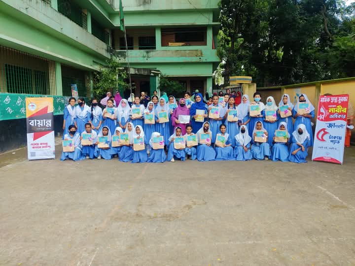

FLAGSHIP · MENSTRUAL HEALTH & EDUCATION
Project Rebirth
A school-based initiative built around menstrual health awareness, practical support, workshops and community engagement.
20educational institutions — proposal target
1,000female learners — proposal target
99 + 4 + 1images + videos + proposal/feedback PDF reviewed
Targets above come from the project proposal and are not presented as completed impact.